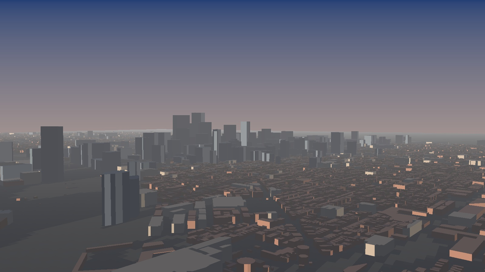

545,451 real building footprints at LiDAR-measured heights, from the City of Philadelphia survey.
It needs WebGL2, which this browser or device does not provide. Everything below is the same model, rendered offline.

Keyboard controls: arrow keys orbit the camera, W A S D pan across the city, plus and minus zoom. Hold shift for larger steps.